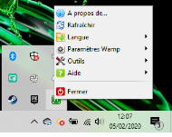
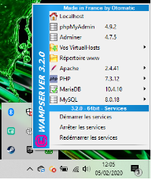

EN COURS DE CONSTRUCTION
Déjà il faut définir la différence entre un site statique et un site dynamique.
Les sites statiques sont des sites codés uniquement à partir des langages HTML et CSS. Ce sont des sites qui peut exister et fonctionner sans problèmes, mais deux défauts leur son propre ; ils ne peuvent se mettre à jour d’eux-même (le propriétaire doit intervenir manuellement à chaque ajout d’élément) et ils se font rare car même le simple ajout d’un formulaire (par exemple) est impossible. Même pour un site vitrine, le fait de ne pouvoir envoyer un mail à l’entreprise pour demander des informations, un rendez-vous ou commander quelque chose à l’entreprise est devenu rare.
Les sites dynamiques sont plus complexes car ils fontionnent avec d'autres langages que HTML et CSS. Sur un site dynamique, le propriétaire n’a plus besoin d’être présent à chaque modifications effectuées sur le site. Pour exister, un site dynamique doit d’abord être un site statique et ensuite être dynamisé avec un ou plusieurs autres langages. Comme PHP et MySQL.
Hypertext Preprocessor, plus connu sous son sigle PHP (sigle auto-référentiel), est un langage de programmation libre, principalement utilisé pour produire des pages Web dynamiques via un serveur HTTP, mais pouvant également fonctionner comme n'importe quel langage interprété de façon locale. PHP est un langage impératif orienté objet.
Le PHP est employé afin de produire des pages Web dynamiques soit grâce à un serveur HTTP7, soit de façon locale comme peut l'être le HTML par exemple. On dit du PHP qu'il est un langage impératif orienté objet ; il traduit les opérations en séquences d'instructions à exécuter par l'ordinateur afin de modifier l'état d'un programme, en faisant appel à des structure de données appelées Object.
Le PHP est flexible et sa grande compatibilité avec d'autres bases de données fait qu’il est utilisé presque partout. Il est également considéré comme facile à maîtriser et à appliquer de part le fait qu’il est disponible sur la grande majorité des hébergement grand public. On peut donc rajouter rapidement quelques éléments dynamiques dans un site statique.
Mais, à contrario, ce langage semble peu cohérent à certains et oblige à aller souvent chercher des informations dans la documentation. Sans expérience, il devient très difficile de gérer son gestion sur des applications non-triviales.
En générale, la qualité principale du PHP est sa souplesse, permettant de traiter ces cas extrêmes avec le même type de technologie. Mais pour d'autres développeurs, ce manque de spécialisation apparaîtra comme un défaut majeur.
On peut donc conclure à ce niveau que pour ce langage, c’est véritablement l’expérience personnelle qui compte.
MySQL est un système de gestion de bases de données relationnelles (raccourcis en SGBDR). Je définirais plus exactement ce qu’est une SGBDR plus bas. Alors que PHP sert à dynamiser une page en la mettant en relation avec un serveur, MySQL sert à stocker les éléments que lui renvois PHP et à les lui envoyer lorsqu’il les demande.
Alors qu’avec seulement HTML et CSS, les sites statiques sont composés de pages de code brutes qui s’affichent une à une quand on les appelle. Mais grâce à PHP et MySQL (par conséquent) les pages HTML sont générées à chaque fois dans le serveur avant d’être envoyés au client. Ainsi, la page et les données demandées par le client sont générées à chaque fois avec les informations entrées ou qu’il demande. Il est également plus facile de mettre à jour son site internet.
Cette question est très bonne car au finale, PHP a ne nombreux concurrent (Ruby, Django et les Java Server Pages pour ne citer que les plus gros). Et en fait, il n’y a pas de bonne réponse. PHP permet de bien dynamiser une page, ce que fait à également ses concurrents. Mais au final, seul son avis personnel permettra de trancher. Donc, si vous vous sentez mal à l’aise avec PHP et MySQL, ne baisser pas les bras et allez voir les autres langages.
Pour travailler en PHP, il nous faut les même bases que pour tout langage de programmation ; un éditeur de texte et un navigateur.
Il nous faut ensuite un serveur web. Le plus simple pour l’instant est Apache auquel on ajoute le plug-in PHP. Pour la suite, je suis l’exemple de Openclassrooms et je travail avec WampServer (http://www.wampserver.com/ ). Il existe d’autres serveurs/logiciels bien entendu, tels que XAMMP, EASYPHP, UWAMP, CADDY, etc. Il est également bon de savoir que tout les CMS possèdent en règle générale un serveur web (WordPress, Joomla!, Prestashop…).
En premier, nous allons parler de Wamp et de son installation. Je précise que ce petit guide d’installation est celui que vous appliquez sous windows.
Après avoir télécharger (Wamp et l'avoir installé. Vous pourrez voir son icône dans la barre des tâches en bas à droite. Désormais vous pourrez accéder à deux menus en faisant un clic droit et un clic gauche dessus ;
 Pour lancer Wamp, faite un clic gauche et cliquer sur « Localhost ». Vous allez arriver sur cette page :

Ici vous pouvez configurer votre serveur qui est désormais installer sur votre machine.
Vous avez désormais accès à plusieurs informations relatives à votre serveur : sa configuration, sa version, ses extensions, etc. Ainsi qu’aux opérations que vous pouvez effectuer sur votre serveur.
Créer un projet ; allez dans C:\wamp\www sur votre machine, et créer un dossier portant le même nom que votre projet. Le dossier apparaîtra alors dans le menu de Wamp. Et si vous l’ouvrez, l’adresse de votre serveur s’adaptera ; http://localhost/nomDuProjet/ .
Openclassroom
la documentation de Wamp
Le livre PHP et MySQL de la maison d’édition Eni